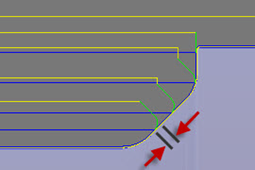

<div id="turning_entry_extension"><p>進入延長の値を指定します。この値には、指定した距離で切削動作が開始される点の前で進入が行われる効果があります。</p>
<table class="tipTable" cellspacing="10">
<tr>
<td><center></center></td>
<td><center></center></td>
</tr><tr>
<td><center><p><b>0mm に設定した進入延長</b></p></center></td>
<td><center><p><b>1mm に設定した進入延長</b></p></center></td>
</tr></table>
</div>